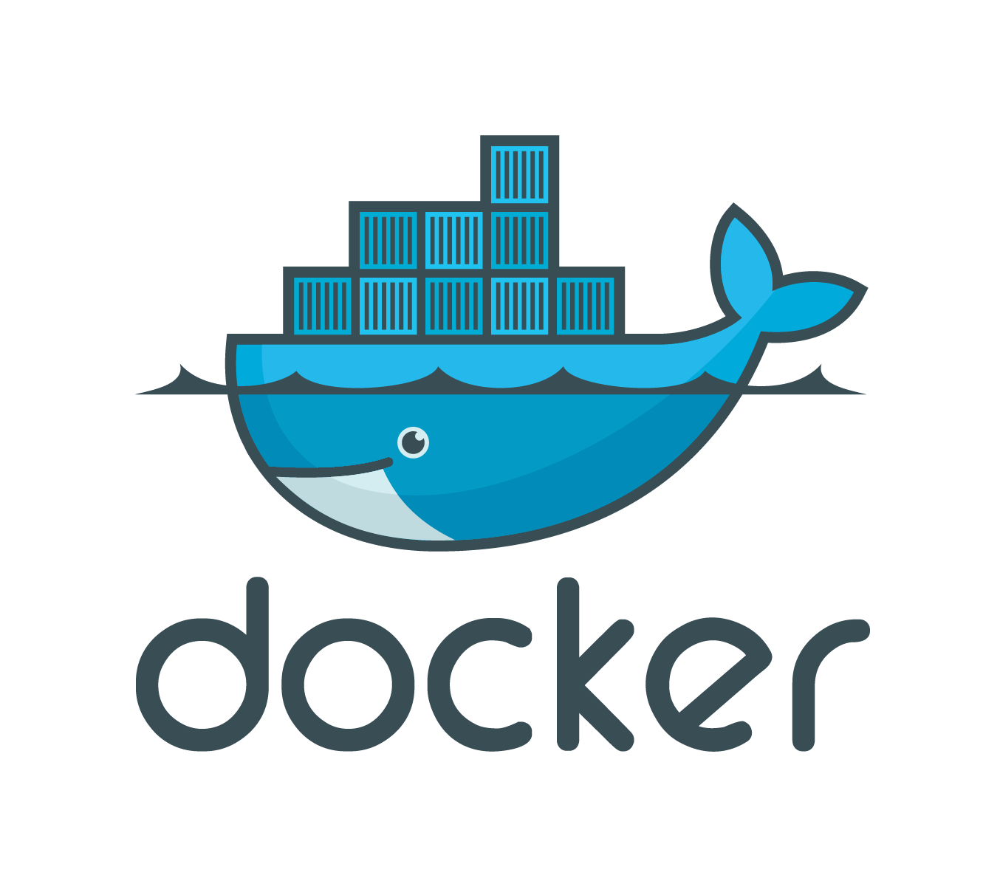
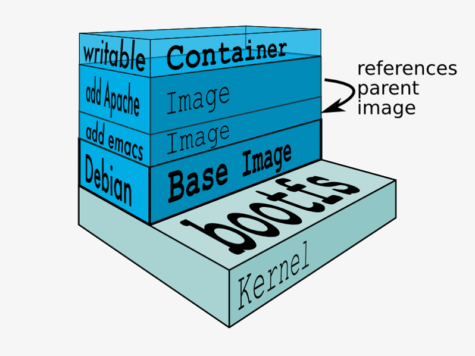

The DevNation Conference

Presented by Alex Lubneuski and Brian Jerardi
Overview
General Tone of the Conference
DevOps is important
Open(Kind Of) Source
DevOps and Containers are new hot topics
What is Dev Ops?
Bringing Development and Operations together
Increases deployment quality
Faster Feature Release
Improved Process Visibility
Docker is an open platform for building, shipping and running distributed applications
Docker is a container
 DevOps is Important
DevOps is Important
DevOps Tool Groups:
Cloud Computing:Paas, Cloud Foundry, ...
Virtualization: Virtual Box, Vagrant, ...
Containers: Docker, ...
App Server: WAS, TCServer
Configuration Tools: Puppet, Chef, Ansible, Salt
Orchestration: Kubernetes, Swarm

Docker

Format and Environment
VM
JVM
executes JVM bytecode
Container
executes machine code
VM
executes machine code
environment = something that looks like a computer
JVM
executes JVM bytecode
environment = Java APIs
Container
executes machine code
environment = Linux kernel system calls interface
Container Vs Virtual Machine:
Analogy:
Room dividers VS Brick Walls
Functional Differences between Containers and VMs:
VM Need a full OS and associated tools ( Backups, logging, periodic job, execution, remote access)
VM Need a full OS and associated tools ( Backups, logging, periodic job, execution, remote access)
Containers can go both ways:
Machine container (runs init, cron, ssh, syslog,…. And the app)
Application container (runs app and nothing else; relies on external mechanisms)
VM has long lifecycle and slow to scale
Containers are fast and cheap ( resource wise)
Development Process Differences between Containers and VMs:
VM:
VM:
Not realistic to have 1 VM per component in DEV
PRD has additional/different components
Therefore they end up with different environments
Development Process (containers)
Runs tons of containers in DEV machines
Build THE SAME container for DEV and PRD
Container Adoption Steps:
First DEV Environment.
First DEV Environment.
Stateless Services
More complex applications
 Opensource(Kind Of)
Opensource(Kind Of)